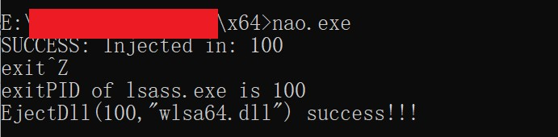
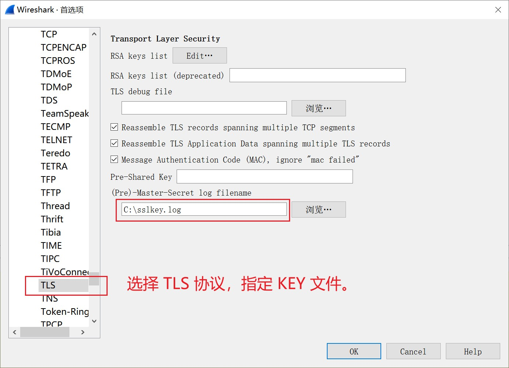
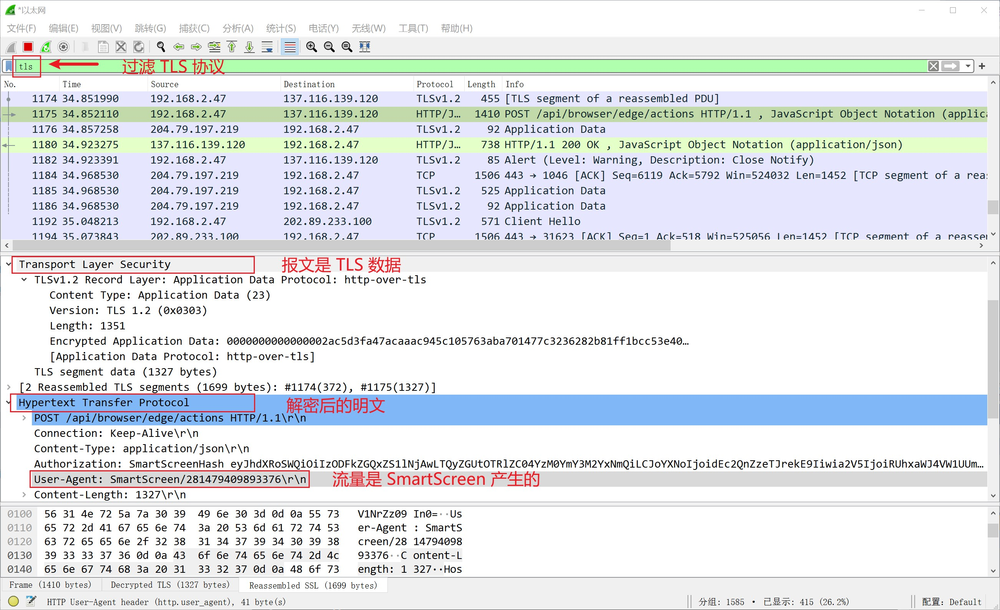

NAO 是一个 TLS KEY 提取器。它从 Windows 的内存中抽取当前主机与外部的 TLS 会话的密钥，并使用 Wireshark 可以识别的格式，存储在C:\sslkey.log。
在 C:\ 创建 sslkey.log 文件。
以管理员权限启动cmd.exe。在 cmd console 中，执行主程序 nao.exe 。文件 C:\sslkey.log 保存了实时抽取的 TLS KEY。
把 sslkey.log 配置给 Wireshark，Wireshark即可实时解密当前主机的 TLS 会话。
 因为主程序使用DLL注入方式，将提取器附在Windows系统进程中，所以，主程序nao.exe会被EDR软件识别为病毒。如有疑虑，可在虚拟环境中验证。
64-bit x86: nao-64bit-0.1.zip MD5:
最后更新: 2021/10/09